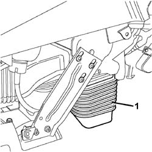

5010B58 <x>DUCT BETWEEN CLIMATE CONTROL UNIT HOUSING AND AIR DUCT TO REAR SEATS (ONE), LH OR RH - R&R</x>
- Path
- Procedures > 50 AUXILIARY UNITS > 5010 CLIMATE CONTROL - MISCELLANEOUS > 5010B CLIMATE CONTROL AIR PIPES AND DUCTS > 5010B58 <x>DUCT BETWEEN CLIMATE CONTROL UNIT HOUSING AND AIR DUCT TO REAR SEATS (ONE), LH OR RH - R&R</x>
- Kind
- repair procedure (removal / refitting; the operation number is the code)
- Applies to
- all engines; all production periods
- Interactive page
- https://sloeber94.github.io/elrnDB-fCrm/en/#/194000582
Applies to: all engines; all production periods
 Removing
Removing
 Refitting
RefittingOp. 7040A65 CONSOLE SIDE CLOSING (ONE) - R.R.
1 Release the duct between the climate control casing and the air duct to the rear seats from the climate control casing.

Applies to: all engines; all production periods
Refitting
Removing- Fit the duct on the climate control casing, checking that it is correctly positioned.